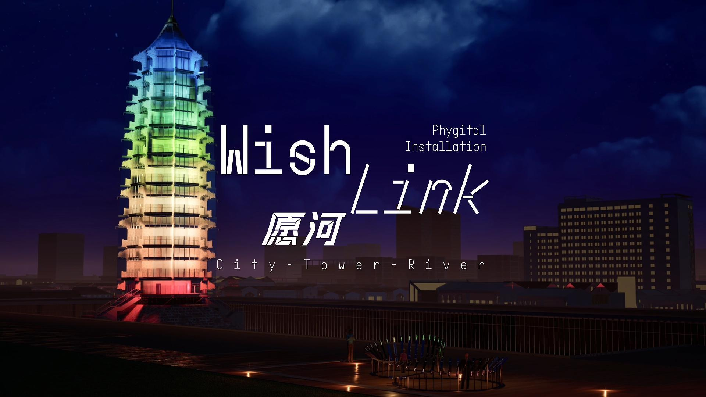
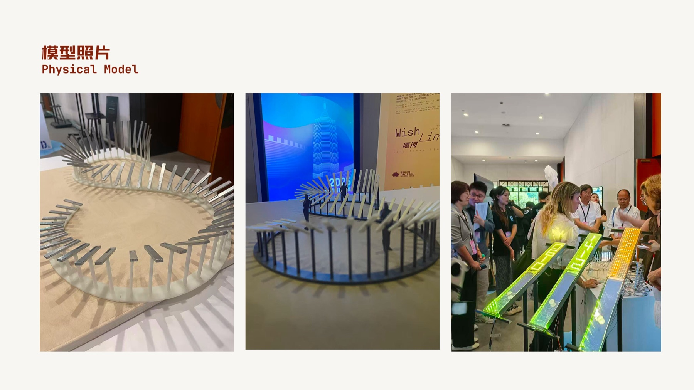
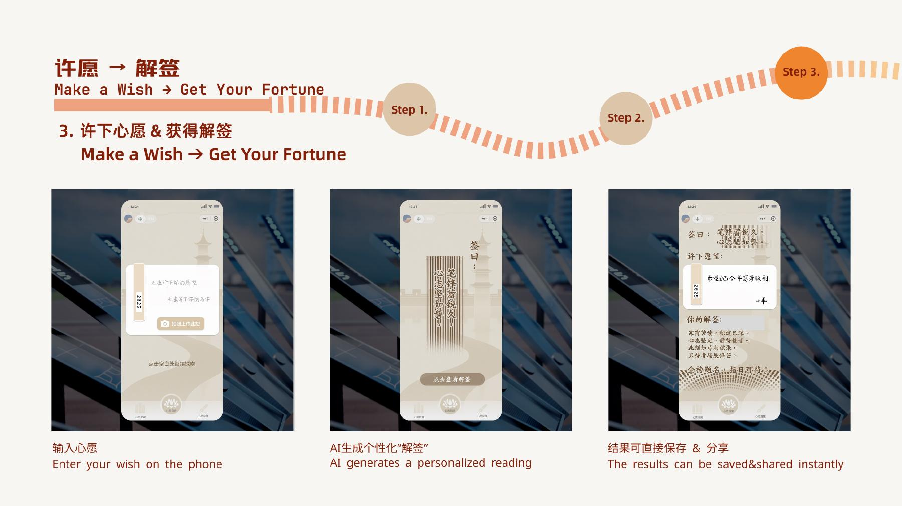
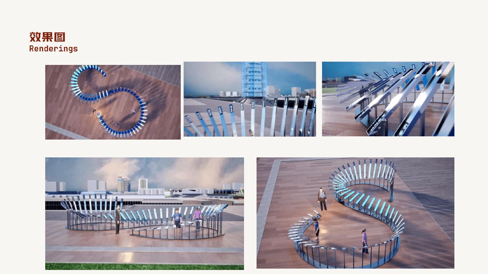

Wish Link
A participatory light installation connecting personal wishes with Nanjing's cultural memory.

A river of wishes.
Wish Link reinterprets the wishing ritual through a parametric physical installation, responsive light, NFC interaction, and a WeChat mini program. Visitors can leave a wish, revisit wishes from others, and receive a personalised response.
The work draws on the Qinhuai River and the Porcelain Pagoda of the Grand Bao'en Temple. Individual interactions become shifting patterns of light, connecting personal emotion with the cultural memory of Nanjing.
- Year
- 2025
- Location
- Nanjing, China
Video
From a wish to a field of light.
The interaction starts on a phone, continues through NFC at the installation, and becomes a collective light response. The physical model and site renderings develop the same idea at different scales.


